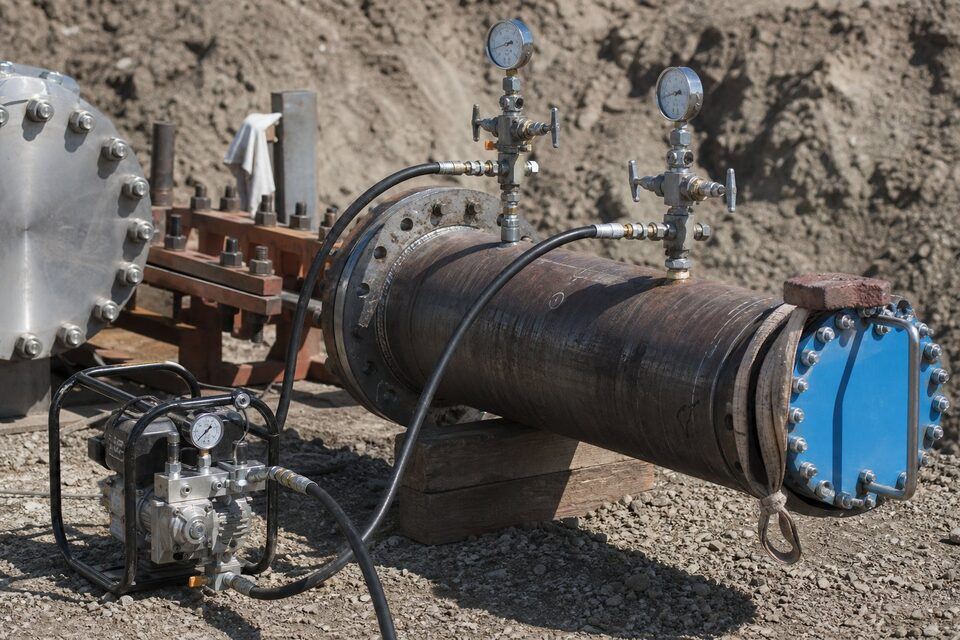

چرا تست هیدرواستاتیک انجام میشود؟
هر خط لولهای قبل از ورود سیال فرایندی باید اثبات کند که در برابر فشار طراحی و فراتر از آن مقاوم است و نشتی ندارد. تست هیدرواستاتیک همین اثبات را به صورت عملی فراهم میکند: خط با مایع، معمولا آب، پر شده و تا فشاری بالاتر از فشار کاری تحت فشار قرار میگیرد و برای مدت مشخصی نگه داشته میشود. اگر افت فشار غیرعادی یا نشتی مشاهده نشود، استحکام خط و کیفیت جوشها و اتصالات تایید میشود. این آزمون در کدهای پایپینگ یک الزام است و بدون گزارش آن، بسیاری پروژهها اجازه راهاندازی ندارند. علاوه بر جنبه ایمنی، تست هیدرواستاتیک یک سند حقوقی نیز هست: در اختلافهای بعدی، گزارش تست مرجع اصلی اثبات کیفیت اجرا در زمان تحویل است.

مراحل اجرای آزمون
اجرای درست آزمون یک ترتیب مشخص دارد. ابتدا خط از نظر تکمیل نصب مطابق نقشهها بررسی و نقاط باز با درپوشها و فلنجهای کور مسدود میشوند؛ تجهیزاتی که نباید تحت فشار تست قرار گیرند مانند شیرهای اطمینان و برخی ابزار دقیق، جدا یا ایزوله میگردند. سپس خط با آب تمیز پر و هوای محبوس از نقاط مرتفع خارج میشود، چون حباب هوا هم دقت آزمون را مخدوش و هم خطر را زیاد میکند. فشار با پمپ دستی یا موتوری به تدریج افزایش مییابد؛ عجله در این مرحله میتواند ضربه قوچ ایجاد کند. پس از رسیدن به فشار تست، مقدار برای مدت زمان تعیینشده کد حفظ و افت فشار پایش میشود. در پایان، فشار به آرامی کاهش و آب به روش کنترلشده تخلیه میگردد.
فشار، مدت و معیارهای پذیرش
- فشار تست: ضریبی از فشار طراحی مطابق کد حاکم و با تصحیح دما.
- مدت نگهداری: بازه زمانی حداقلی مشخصشده در کد یا مشخصات پروژه.
- دقت گیج: گیجهای کالیبره با رنج مناسب و تعداد کافی.
- معیار افت فشار: محدوده مجاز افت با توجه به دما و انبساط سیستم.
- بازرسی بصری: عدم نشتی، تعریق یا تغییر شکل در جوشها و اتصالات.
یکی از نکات ظریف تفسیر نتایج، اثر دما بر فشار است: تغییر دمای آب داخل خط، فشار را تغییر میدهد و ممکن است با افت فشار ناشی از نشتی اشتباه گرفته شود. بنابراین آزمون باید در شرایط دمایی پایدار و ترجیحا در ساعات کمنوسان روز انجام شود و تفسیر افت فشار با در نظر گرفتن دما صورت گیرد. اگر افت مشاهده شد، قبل از اعلام عدم انطباق، ابتدا نشتیهای احتمالی در اتصالات موقت و شیرها بررسی میشوند؛ بسیاری «شکستهای» آزمون در واقع نشتی از چیدمان تست است نه از خط اصلی. پس از رفع نقص، آزمون تکرار میشود و نتایج هر دو مرحله ثبت میگردد.
ایمنی آزمون
تست هیدرواستاتیک با وجود استفاده از مایع، همچنان یک فعالیت پرخطر است؛ انرژی ذخیرهشده در سیستم تحت فشار میتواند در صورت شکست ناگهانی، آسیب جدی ایجاد کند. بنابراین منطقه آزمون باید محدودهبندی و از تردد غیرمسئول جلوگیری شود، پرسنل در زمان نگهداری فشار پشت موانع یا خارج از خط دید مستقیم شکست احتمالی قرار گیرند و افزایش فشار فقط توسط اپراتور مسئول انجام شود. گیجها و اتصالات موقت باید قبل از شروع کنترل شوند و هرگونه تعمیر روی سیستم فقط پس از تخلیه کامل فشار مجاز است. در خطوط بزرگ و فشار بالا، تهیه برنامه ایمنی مکتوب با شناسایی خطرات و مسئولیتها الزامی است و جلسه هماهنگی قبل از آزمون با حضور ناظر و پیمانکار برگزار میشود.
مدارک و گزارش آزمون
گزارش تست هیدرواستاتیک سندی است که سالها بعد نیز مرجع باقی میماند و باید کامل تنظیم شود: مشخصات خط یا محدوده تست، فشار طراحی و فشار تست، مدت نگهداری، تاریخ و دمای محیط، مشخصات و گواهی کالیبراسیون گیجها، نتیجه نهایی و امضای مسئولان اجرا و نظارت. در پروژههای دارای بازرسی شخص ثالث، حضور و تایید بازرس نیز در گزارش ثبت میشود. بهتر است محدودههای تست روی نقشههای چونساخت نیز مشخص شوند تا در آینده قابل ردیابی باشند. این مدارک به همراه گزارشهای آزمونهای غیرمخرب و گواهی متریال، پرونده کیفیت خط را تشکیل میدهند و در بازرسیهای دورهای بهرهبرداری استفاده خواهند شد.
جمعبندی
تست هیدرواستاتیک، آخرین و مهمترین اثبات کیفیت اجرای خطوط لوله است. با رعایت ترتیب اجرا، تفسیر درست نتایج با در نظر گرفتن دما، رعایت کامل ایمنی و تنظیم مدارک دقیق، این آزمون هم ایمنی راهاندازی را تضمین میکند و هم سندی ماندگار برای بازرسیهای آینده میسازد.
سوالات رایج
هدف تست هیدرواستاتیک چیست؟
اثبات استحکام مکانیکی خط لوله و اتصالات آن در فشاری بالاتر از فشار کاری و تایید نشتی نداشتن سیستم قبل از راهاندازی؛ این آزمون در اکثر کدهای پایپینگ الزامی است.
فشار تست معمولا چند برابر فشار کاری است؟
بسته به کد حاکم، معمولا ضریبی از فشار طراحی؛ برای مثال در کدهای رایج پایپینگ، فشار تست هیدرواستاتیک حدود یک و نیم برابر فشار طراحی در نظر گرفته میشود و دما نیز در محاسبه اثر دارد.
چرا از آب به جای گاز استفاده میشود؟
مایعات تراکمپذیری بسیار کمی دارند و در صورت شکست، انرژی آزادشده محدود است؛ تست با گاز فشرده انرژی ذخیره بسیار بالاتری دارد و ذاتا خطرناکتر است.
معیار پذیرش آزمون چیست؟
حفظ فشار در بازه مجاز در مدت زمان مشخص بدون افت غیرقابل توجیه و عدم مشاهده نشتی یا تعریق در جوشها و اتصالات؛ نتایج باید در گزارش رسمی ثبت شود.
مطالب مرتبط
هماهنگی اجرای تست هیدرواستاتیک خطوط لوله و پایپینگ مطابق کد حاکم پروژه با مدارک کامل.
مشاهده صفحه محصول ← ثبت RFQ همین محصولتامین این تجهیزات را به پیشرو تجهیز فرتاک بسپارید
شرکت پیشرو تجهیز فرتاک تامینکننده تخصصی تجهیزات صنعتی برای پروژههای نفت، گاز، پتروشیمی، فولاد و نیروگاهی است. برای دریافت پیشنهاد فنی و قیمت، استعلام (RFQ) خود را ثبت کنید تا کارشناسان مهندسی فروش در کوتاهترین زمان پاسخ دهند.
- تامین تجهیزات صنایع نفت و گازپکیج مواد مطابق وندورلیست
- تامین تجهیزات پتروشیمیاقلام مکانیکال و ابزار دقیق